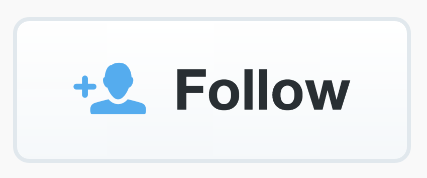

QR Tools
wget https://raw.githubusercontent.com/coder12341/qr-tools/website/downloads/install_rpi.sh && chmod +x install_rpi.sh && sudo ./install_rpi.sh && rm install_rpi.sh && qr-generator -h
wget https://raw.githubusercontent.com/coder12341/qr-tools/website/downloads/install_linux.sh && chmod +x install_linux.sh && sudo ./install_linux.sh && rm install_linux.sh && qr-generator -h

QR-Tools is a powerful collection of tools.
You can use it to read and generate QR-Codes.
Features
These tools have many capabilities.
The QR-Reader can read almost any type of QR-Codes.
And it is extremely easy to generate QR-Codes with the user friendly UI of our QR-Code Generator.
The QR Code Generator creates QR-Codes that contain more than just text.
It is perfect for you if you want to generate QR-Codes that contain...
Plain Text and Hyperlinks(micro qr codes also supported)
Wifi connection information
SMS Messages
Emails
Contact Details
Event Details
You can also add your custom logo on the generated QR-Code
(This doesn't work with micro-qr codes).
Downloads
Download the source code now in form of a ZIP Package or visit the GitHub project page.
About
Creted by coder12341.
me on Github.